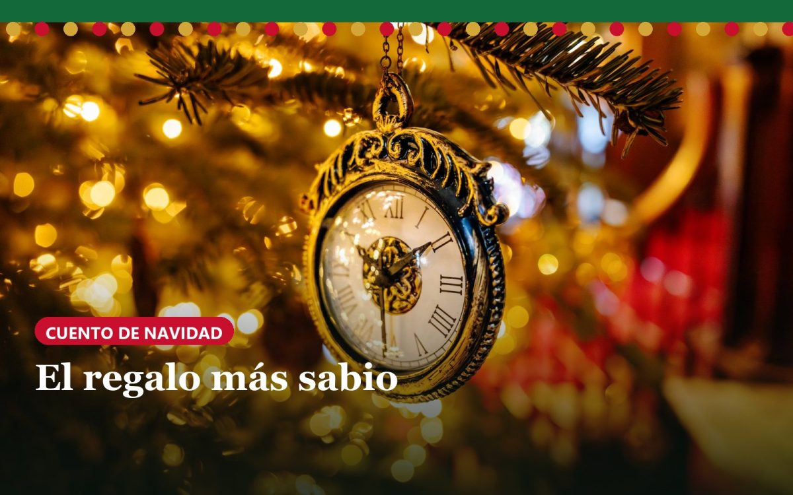

El regalo más sabio (cuento de Navidad para leer en familia)

*Cuento para leer en voz alta · 5 minutos · a partir de 5 años*
*Inspirado en «El regalo de los Reyes Magos», de O. Henry.*
Hace muchos años, en un Madrid de calles empedradas y faroles de gas, vivían Lola y Juan en un piso pequeñito, tan pequeño que desde la cama se podía remover el puchero de la cocina.
No tenían mucho dinero. Pero tenían dos tesoros.
El tesoro de Lola era su pelo: largo, castaño y brillante, le llegaba casi hasta las rodillas. Cuando se lo soltaba junto a la ventana, parecía una cascada de chocolate.
El tesoro de Juan era un reloj de bolsillo de oro que había sido de su abuelo, y antes del abuelo, del bisabuelo. Hacía tic, tac, tic, tac, y Juan lo miraba con mucho orgullo... aunque lo llevaba atado con una cuerdecita vieja, porque no tenía cadena.
La víspera de Reyes
Llegó el 5 de enero. Por la calle pasaban niños con faroles y olía a roscón recién hecho. Lola contó sus monedas sobre la mesa. Una, dos, tres... Las contó otra vez. No llegaban para nada.
—Yo quiero regalarle a Juan algo precioso —suspiró—. Algo digno de su reloj.
Se miró en el espejo. Se miró el pelo. Y tomó una decisión muy valiente.
Se puso el abrigo y fue corriendo a una tienda donde ponía: «Se compra cabello». La señora de la tienda acarició aquella melena y dijo:
—Te doy veinte duros por él.
Lola cerró los ojos un momento. Luego dijo que sí. Salió con el pelo cortito, como un chico, y el bolsillo lleno. Recorrió todas las tiendas de la calle hasta que lo encontró: una cadena de oro, sencilla y elegante, perfecta para el reloj de Juan.
Al llegar a casa, se miró otra vez al espejo y se rió un poco nerviosa.
—Ojalá me siga queriendo con el pelo de pollito —dijo.
La sorpresa
Al anochecer se abrió la puerta. Entró Juan con la nariz roja de frío. Vio a Lola... y se quedó quieto como una estatua.
—Juan, no pongas esa cara —dijo ella—. Me he cortado el pelo y lo he vendido. ¡Ya crecerá! Es que quería hacerte un regalo de Reyes muy especial. ¡Ábrelo!
Pero Juan, en lugar de abrirlo, sacó del abrigo un paquetito y se lo dio.
Lola desató el lazo. Dentro había dos peinetas de nácar, con piedrecitas que brillaban como estrellas. Eran las peinetas que ella había visto mil veces en el escaparate de la calle Mayor, las que soñaba ponerse en su larga melena.
—¡Oh, Juan! —dijo, con los ojos llenos de lágrimas—. Son preciosas... Y mi pelo crece muy rápido, ¿sabes?
Entonces le dio a él su regalo. Juan abrió la caja, vio la cadena de oro y se sentó despacio en la silla. Y luego se echó a reír, con una risa suave y cariñosa.
—Lola —dijo—, he vendido el reloj para comprarte las peinetas.
Se miraron. Él sin reloj, con una cadena. Ella sin melena, con unas peinetas. Y se rieron tanto que tuvieron que abrazarse para no caerse.
—Guardaremos los regalos un tiempo —dijo Juan—. Son demasiado bonitos para usarlos ya.
Aquella noche cenaron sopa y un trocito de roscón, y fueron felices como nunca.
Dicen que los Reyes Magos fueron los primeros en hacer regalos, y que eran muy sabios. Pero aquella noche, en un piso pequeñito de Madrid, hubo dos personas igual de sabias. Porque cada uno dio lo que más quería para hacer feliz al otro. Y ese es el regalo más grande que existe.
Para hablar después del cuento
- ¿Por qué crees que Lola y Juan se rieron en lugar de enfadarse?
- ¿Qué es lo que más quieres tú? ¿Lo darías para hacer feliz a alguien?
- ¿Cuál es el mejor regalo que te han hecho que no se pueda comprar?
Más historias
Tienes más cuentos de Navidad en Historias de Navidad.
Lo que sale en este artículo

Cuentos de Navidad para leer y colorear (PDF)
6 cuentos para leer en voz alta y 13 láminas con las mismas escenas para que los peques coloreen mientras escuchan

Cuaderno de Navidad para colorear (PDF, 13 láminas)
13 láminas navideñas de línea gruesa: el abeto, los duendes, los Reyes, Scrooge y Lázaro